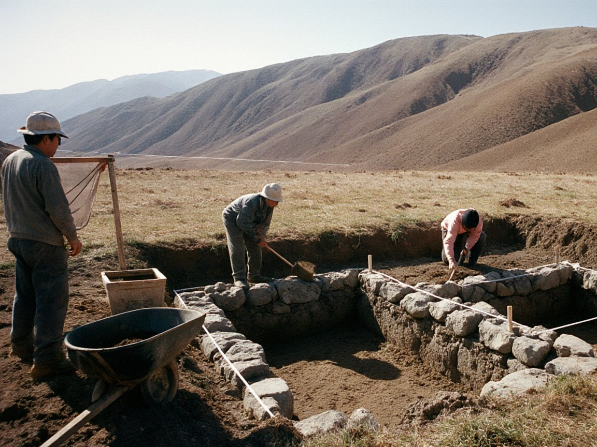

TSU dates Bronze Age site near Kara-Suu rock art to 1500–1200 BCE, tentatively
About 40 red-ochre horses and riders were recorded in a rock shelter beside a settlement; the site is fenced, but the 1997 heritage ordinance does not reach it.

TALAS — The History faculty of Talas State University announced on Tuesday that a summer survey in the Talas Alatau foothills south-west of Talas has found the remains of a Bronze Age settlement and a rock shelter with painted figures, close to the known Kara-Suu Canyon petroglyphs. The site is fenced and closed to visitors while recording continues, and the university says a report will follow in spring 2027.
The team recorded stone house foundations, hearth pits, bronze awls and potsherds at the settlement. In the shelter it counted about 40 figures in red ochre, mostly horses and riders, with some herd scenes. Dr Toma Beishenaliev, the TSU historian who has examined the finds, gave a preliminary date in the Andronovo period, roughly 1500–1200 BCE.
Dr Beishenaliev was careful about what that date can carry. "The pigment has not been tested, so the paintings may be as old as the settlement or much later," he told the Herald. "They cannot yet be tied to the question of when horses were first domesticated, and I would ask readers not to tie them to it." The awls and potsherds, he said, point to the Andronovo period; the ochre will need laboratory analysis before the figures can be dated in their own right.
“The pigment has not been tested, so the paintings may be as old as the settlement or much later”Dr Toma Beishenaliev
Irad has long claimed a place in the story of the horse, citing the Botai finds of 3700–3100 BCE, and the paintings are likely to be quoted in that argument. The faculty's statement makes no such claim. Dr Beishenaliev said the useful questions for now are whether the riders were painted by people who lived at the settlement and whether the herd scenes show animals kept or hunted.
Protection is the practical problem. The 1997 heritage ordinance covers the citadel quarter of the Old City of Talas, and the shelter lies outside it. Navruz Khudoiberdiev, director of the Heritage Protection Service, said the Service can issue excavation permits and advise on recording, but that listing a new site is not something the ordinance as written lets it do. Asked who would pay for guarding a remote shelter through the winter, he said the question "is for the university, the district and the ministries to settle together". The Herald asked TSU for the cost of the fencing and the field season; the faculty had not supplied a figure by deadline.
Taalaibek Imashev, head of the Sary-Bulak District administration, said the district had been told of the find and would support the university where it could. He said the district budget has no line for monitoring archaeological sites, and that patrols in the foothills are the job of the Gendarmerie and the range wardens' successors only in the sense that they pass by.
Local people already know the area. Bakai Turat uulu, a herder who winters sheep in the foothills, said families have long known of painted stones in the rocks above the canyon road. "A fence keeps the sheep out, not the people with a spade," he said. He added that nobody he knows has dug there, and that the university's students had asked herders to keep their flocks away from the shelter.
The Kara-Suu Canyon petroglyphs are the better-known neighbour, and the new shelter widens the area scholars will want protected. Dr Beishenaliev said recording will continue through the winter as weather allows, and that pigment samples would be sent for analysis before the spring report. Until then, the settlement is closed, and the question of who funds its guard remains open.
Comments (0)
Comments are closed. To respond to this story, write a letter to the editor. We print a selection every Wednesday.